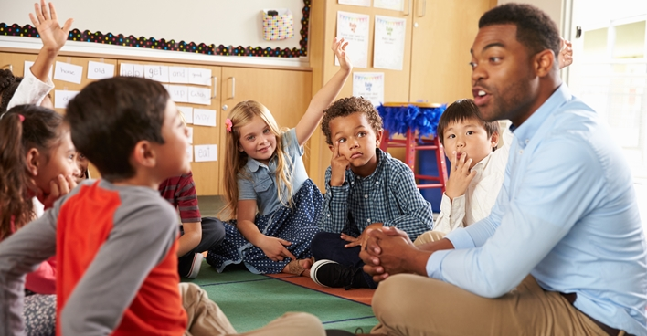

Las acciones que deben tomar los padres, los testigos y las autoridades frente a casos de bullying son cruciales para abordar la situación de manera efectiva y proporcionar apoyo a la víctima. Aquí hay algunas acciones recomendadas para cada grupo:
.
Padres
Comunicarse con su hijo/hija
Hablar abierta y comprensivamente con su hijo o hija para entender su experiencia y ofrecer apoyo emocional.
Documentar los incidentes
Ayudar al niño a mantener un registro detallado de los incidentes de bullying, incluyendo fechas, lugares y personas involucradas.
Contactar a la Escuela:
Comunicarse con los maestros, consejeros escolares o directores para informar sobre el bullying y buscar una solución conjunta.
Colaborar con la escuela
Trabajar en conjunto con la escuela para implementar medidas preventivas y correctivas, y participar en reuniones para abordar el problema.
Buscar apoyo externo
Consultar con consejeros, psicólogos o grupos de apoyo para obtener orientación y asistencia adicional.
Imagen Referencial |
Testigos
Intervenir de manera segura:
Si es seguro hacerlo, intervenir para detener el bullying en el momento. La intervención de testigos puede ser poderosa y disuasiva.
Apoyar a la víctima:
Brindar apoyo a la víctima después del incidente, ya sea caminando con ellos, ofreciendo consuelo o informando a las autoridades correspondientes.
Denunciar los incidentes:
Informar a maestros, administradores escolares o padres sobre los incidentes de bullying que hayan presenciado.
Participar en Programas Antiacoso:
Trabajar en conjunto con la escuela para implementar medidas preventivas y correctivas, y participar en reuniones para abordar el problema.
Imagen Referencial |
Autoridades (Maestros, Directores, Consejeros Escolares):
Tomar Todas las Denuncias en Serio:
Asegurarse de que todas las denuncias de bullying se tomen en serio y se investiguen adecuadamente.
Implementar Medidas Correctivas:
Tomar medidas disciplinarias apropiadas contra los agresores y trabajar con ellos para cambiar su comportamiento.
Proporcionar Apoyo a la Víctima:
Ofrecer apoyo emocional y, si es necesario, derivar a la víctima a servicios de asesoramiento o apoyo psicológico.
Fomentar un Ambiente de Tolerancia y Respeto:
Implementar programas de prevención del acoso que promuevan la tolerancia, el respeto y la empatía en toda la comunidad escolar.
Involucrar a los Padres:
Mantener una comunicación abierta con los padres de los niños involucrados, informándoles sobre las acciones tomadas y buscando su colaboración en la resolución del problema.
Realizar Formaciones y Sensibilización:
Proporcionar formación periódica a los estudiantes, maestros y padres sobre el bullying y cómo prevenirlo.
Imagen Referencial  |